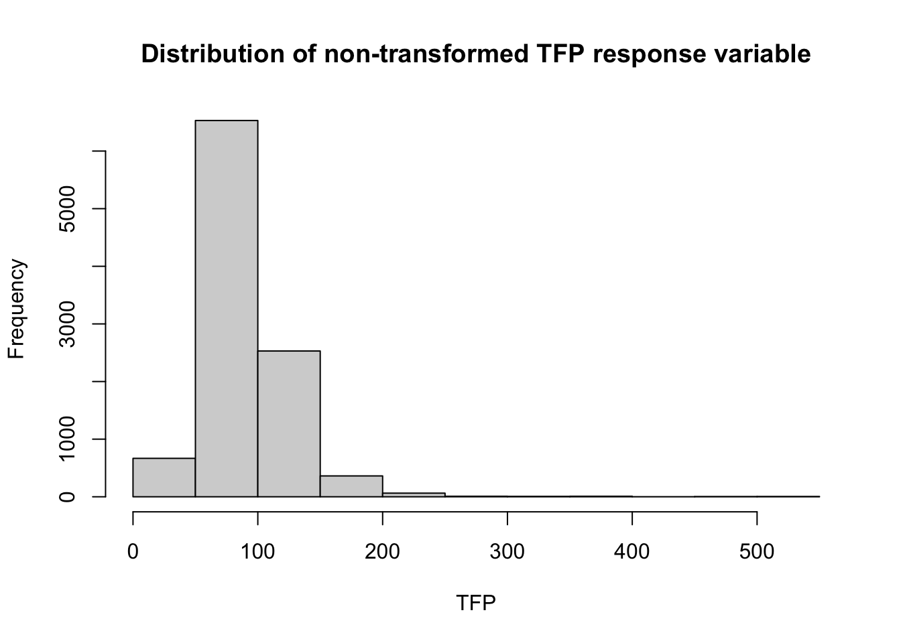

The agricultural sector faces opposing pressures of sustaining a growing population while minimizing its unfavorable environmental outcomes1. In an effort to simultaneously move towards these goals, countries around the world have prioritized agricultural productivity. One of the most informative measures of agricultural productivity is total factor productivity (TFP). TFP compares gross outputs of crop, animal and aquaculture products to inputs of land, labor, capital and material resources utilized in farm production2. As gross output increases at a faster rate than total inputs, total factor production improves, which eases tensions on environmental resources and food security, and boosts economic growth3.
TFP is an important measure for informing policy priorities for agricultural productivity. These policies include investments in research and development, incentivizing economic reforms for farmers, rural education and extension, and improved infrastructure4. Understanding the effects of individual inputs on TFP can direct decision making as it relates to resource allocation for policy investments.
This analysis will regress global TFP on inputs of land, labor, capital, and materials to identify the effects of these inputs on gross outputs. This regression can be utilized to maximize TFP growth rates by differentiating efficiency levels of individual inputs as they relate to gross productivity, which can direct resource allocation to technological improvements of inefficient input systems.
Additionally, it will examine TFP growth rates for individual groupings of economic status defined by the World Bank by testing for mean differences. It will also forecast TFP growth rates for years 2020-2030 at a global scale and for economic classes by employing automated autoregressive moving average (ARIMA) models. Understanding nuances in TFP growth for varying income scales can be useful in further research to refine regressions that direct policy prioritization.
All relevant analysis outputs are included in the Analysis section - for detailed code concerning model checking, reference the Model Testing and Supporting Figures section.
Data
Data used in this analysis is sourced from the United States Department of Agriculture’s (USDA) Economic Research Services5. This data is publicly available here. Data files contain annual indices for agricultural TFP, outputs, and inputs for individual countries, major global regions, and countries grouped by income levels for years 1961-2020. Detailed data on land, labor, capital and material inputs used to construct TFP indices is also included, but are not contained in the subsetted data used for the purposes of this particular analysis. TFPs are indexed with a base year of 2015 such that TFP values for countries and regions are set to 100 in 2015.
It is relevant to note that TFP index comparison between geographical regions provides information regarding TFP growth rates, but is not informative for direct comparison of productivity levels.
see code
#full datatfp_all <-read_excel("~/EDS222/EDS222Final/AgTFPInternational2020_long.xlsx", sheet =2) |>clean_names()#world datatfp_world <- tfp_all |>filter(level =='World')#world tfp indices tfp_world_plot <-ggplot(data = tfp_world) +geom_line(aes(x=year, y=tfp_index, group =1)) +theme_minimal() +labs(y ='TFP Index', x ='Year', title ='Global Total Factor Production Indices (1961-2020)') +scale_x_discrete(breaks = scales::pretty_breaks(n=10)) ggplotly(tfp_world_plot)
Analysis
Linear Regression
A stepwise regression is performed to compare a linear model containing no predictors to a full linear model containing all input variables (land, labor, capital, and materials). The results of this regression suggest that materials are not a relevant predictor in estimating TFP. Consequently, we opt for a model containing three predictor variables: land, labor, capital.
The r-squared, adjusted r-squared, and Mallow’s Cp values of the leaps procedure affirm that this model is optimal in predictive accuracy. A pairwise analysis of the reduced predictor variables suggests that there may be significant variable interactions. A second stepwise regression is performed with a full linear model containing all interactions between refined predictor variables, which suggests that there is a significant interaction between land and capital inputs. Therefore, we include this interaction term in the refined model.
The Normal Q-Q plot of the residuals evidences slight non-normality. A log transformation of the response variable, TFP, is performed for normalization.
A summary of the updated model is evaluated. A Residuals vs. Fitted plot displays a roughly even spread of residuals around the zero line, which suggests that equal variance and linearity assumptions are satisfied. A Normal Q-Q plot suggests normality given its relative linearity. Therefore, we accept the reduced and transformed model as a final model.
The final model is given by: \[log(TFP) = \beta_0 + \beta_1*land_i + \beta_2*capital_i + \beta_3*labor_i + \beta_4 * land_i:labor_i + \varepsilon_i\]
see code
tab_model(model2, pred.labels =c('Intercept', 'Land','Labor', 'Capital', 'Land * Capital'),dv.labels ='Log Total Factor Production',string.ci ='95% Conf. Interval',string.p ='P-value',title ='Transformed Linear Model Results for TFP Regression',digits =7)
Transformed Linear Model Results for TFP Regression
Log Total Factor Production
Predictors
Estimates
95% Conf. Interval
P-value
Intercept
4.5154529
4.4889663 – 4.5419395
<0.001
Land
0.0008662
0.0005873 – 0.0011451
<0.001
Labor
-0.0019178
-0.0021221 – -0.0017135
<0.001
Capital
-0.0000779
-0.0001752 – 0.0000194
0.117
Land * Capital
0.0000062
0.0000047 – 0.0000077
<0.001
Observations
10187
R2 / R2 adjusted
0.075 / 0.075
The model regression indicates that capital is not a significant predictor variable (p = 0.117); however, all other predictor variables are found to be significant at the 0.05 level (p < 0.05 for all remaining variables). Given that the interaction between land and capital variables is significant (p < 0.001), we opt to preserve capital as a predictor variable in spite of its insignificant predictive power. It is relevant to note that the model summary values are based off of a log-transformed model - for interpretability of these results, it is recommended an inverse transformation be performed on the model estimates. In spite of this, given the signs of the estimates, it can be concluded that labor and capital inputs are negatively correlated with TFP, while land and land/capital interaction inputs are positively correlated with TFP. The overall prediction power of the model is low (evidenced by adjusted r-squared = 0.075), which suggests that it is not well equipped to accurately predict TFP variability.
Differences in Means for Varying World Economies
We move to performing statistical tests to compare means of TFP indices between countries grouped by income classes defined by the World Bank: low income (LI), lower-middle income (MI-L), upper-middle income (MI_U), high income (HI). Our first step is to visualize the distribution of the data for all income classes.
see code
tfp_income <- tfp_country |>select(income, tfp_index) |>filter(income %in%c('LI','MI-U','HI','MI-L')) |>mutate(income =as.factor(income))violin_plot <-ggviolin(tfp_income, x='income', y='tfp_index', fill ='income', order =c('LI', 'MI-L', 'MI-U', 'HI'), ylab ='TFP Index', xlab ='Income Class',draw_quantiles =0.5, add ='boxplot') ggpar(violin_plot, legend.title ='Income Class', xlab ='',caption ='Distribution of TFP Indices for Varying Income Levels',ggtheme =theme_minimal())
Given that there are significant outliers in each income class, mean differences are tested using Kruskal-Wallis and Dunn tests, both non-parametric methods that have no assumptions of normality.
The null hypothesis: \[H_0: \mu_{low}=\mu_{mid-low} = \mu_{mid-high} = \mu_{high}\]
The alternative hypothesis:
HA: mean TFP indices are not equal across all income classes
see code
income_k <-kruskal_test(tfp_index ~ income, data = tfp_income)tab_df(income_k)
.y.
n
statistic
df
p
method
tfp_index
9627
333.97
3
0.00
Kruskal-Wallis
see code
income_pairs_d <-dunn_test(tfp_index ~ income, data = tfp_income, p.adjust.method ='bonferroni')income_pairs_d <- income_pairs_d |>add_xy_position(x ='income') ggboxplot(tfp_income, x ='income', y ='tfp_index',order =c('LI', 'MI-L', 'MI-U', 'HI')) +stat_pvalue_manual(income_pairs_d, hide.ns =TRUE) +labs(subtitle =get_test_label(income_k, detailed =TRUE),caption =get_pwc_label(income_pairs_d),y ='TFP Index', x ='Income Level')
The Kruskal-Wallis test (p=4.42e-72\[\approx\]0) rejects the null hypothesis; there is significant evidence to suggest that there is a difference in mean TFP indices between differing income classes. The Dunn test indicates that this difference is statistically significant between all income class pairings.
TFP Growth Forecasting
We employ autoregressive integrated moving average (ARIMA) models to predict global and income class grouped TFP indices until year 2030.
see code
tfp_time <- tfp_world |>mutate(date =paste0(year, '-01-01'),date =as.Date(date, format ='%Y-%m-%d')) |>group_by(date) |>summarize(tfp_index_mean =mean(tfp_index))ts <-xts(tfp_time$tfp_index_mean, tfp_time$date)fit <-auto.arima(ts)fit_forecast <-forecast(fit)pred.tr <-predict(fit, n.ahead=10)U.tr <- pred.tr$pred +2*pred.tr$seL.tr <- pred.tr$pred -2*pred.tr$sets.plot(ts, xlim=c(0,length(ts)+12), ylim=c(min(ts),max(ts)+20))title(main ='Forecasted TFP Indices for Global Data',sub ='Forecasts for ARIMA(2,2,1) Model with 95% Confidence Intervals',cex.sub =0.75)legend('topleft', inset =0.02,legend =c('Forecast', '95% CI'),col =c('red', 'blue'),lty =c(1,2))lines(U.tr, col='blue', lty='dashed')lines(L.tr, col='blue', lty='dashed')lines((length(ts)+1):(length(ts)+10), pred.tr$pred, col='red')
Based on historical trend, the forecast anticipates that global TFP will continue to grow in the coming decade. We look to forecasted values for more detailed information concerning this growth.
The automated models for income class groups predict that low income and upper-middle income class countries will see no change in TFP indices throughout the forecasted decade. The models also predict that lower-middle income and high income countries will experience steady growth in TFP indices, which is reflected similarly in predicted consistent TFP growth for non-grouped world data.
Discussion
The maximization of agricultural total factor productivity will promote sustainable economic growth and can be used as a tool to ease the environmental burden of agriculture, so understanding the effects of inputs in TFP is pertinent to resource allocation in policy drivers.
Results of the linear regression evidence that only land, labor, and land/capital interaction inputs are significant predictors of TFP, although we preserve capital inputs in our model due to its significance in interaction terms. The global model’s coefficient estimates indicate that land and land/capital interaction inputs are positively correlated with TFP - that is, increased inputs of these variables correlates to gross output that increases at a faster rate than growth of inputs. Inversely, labor and capital inputs are negatively correlated with TFP - while increased inputs of these variables may increase total outputs, the growth rate of associated outputs is smaller than the growth rate of inputs.
To further interpret explanatory variables of the transformed model, we would transform summary coefficients following the equation \[(\exp(coefficient.estimate)-1)*100\] such that they reflect percent increases (as opposed to unit increases) of the response variable, TFP, for one-unit increases in the estimated coefficient’s associated variable(s).
Mean testing indicates that there is a statistically significant difference in mean TFP values between all income class pairs. A one-sided test of means may offer more insight regarding income class TFP distinctions.
The time series forecasting of TFP indices exhibits predicted increases in global TFP indices in the next decade, yet only lower-middle income and high income classifications are expected to see growing TFP, while low income and upper-middle income classifications are predicted to stagnate. As it pertains to low-income countries, it is reasonable to assume that there is limited flexibility for expenditure on the research and development that TFP growth necessitates, so this stagnation is largely unsurprising. A potential explanation for upper-middle income TFP stagnation is the “middle-income trap”. However, these theories are largely assumptive. Cross-country and cross-income differences in TFP growth depend on numerous factors including research and development, enabling environments, and economically disruptive shocks6, so more integrative models may point more directly towards plausible growth explanations.
Further Research
It is likely that a stronger linear model could be produced through inclusion of detailed data on land, labor, material, and capital inputs rather than the summative indexes that this analysis employs. Furthermore, some of the residuals of the automated predictive models appear to be significant beyond the randomness of white noise (see supporting figures), which implies potential to produce a more accurate forecasting model.
As it relates to individual country policy prioritization, best fitting models will employ data particular to the country of interest rather than at global or economic class scales.
Finally, current measures of TFP do not factor environmental impacts. Growing productivity rates ease the demand for agricultural enabling resources, which lessens pressure on finite environmental reserves. However, higher productivity can also result in higher externalities that negatively impact the environment. The Network on Agricultural TFP and the Environment, launched in 2017, aims to develop a framework for cross-country agricultural TFP comparisons to help adrress this issue7.
Conclusion
This analysis lends itself to understanding how policy priorities can be shaped to maximize agricultural TFP growth through individual inputs, and examines the differences of this index across various levels of economic class.
#fitted vs. residuals checking for non-transformed modelplot(fitted(model1),residuals(model1))abline(h=0)title(main ='Fitted vs. Residuals for non-transformed linear model')
see code
#normal qqplot for non-transformed modelqqnorm(residuals(model1))qqline(residuals(model1))
see code
#histogram of non-transformed response variable (TFP) distributionhist(y, main ='Distribution of TFP', xlab ='TFP')

see code
#transformed model model2 <-lm(log(y) ~ x1+x2+x3+x2:x1)#fitted vs. residuals checking for log transformed model plot(fitted(model2),residuals(model2))abline(h=0)title(main ='Fitted vs. Residuals for log transformed linear model')
see code
#normal qqplot for log transformed modelqqnorm(residuals(model2))qqline(residuals(model2))
see code
#histogram of log transformed response variable (TFP) distributionhist(log(y), main ='Distribution of log transformed TFP', xlab ='log(TFP)')
Ljung-Box test
data: Residuals from ARIMA(0,2,2)
Q* = 4.4176, df = 8, p-value = 0.8176
Model df: 2. Total lags used: 10
Footnotes
Network on Agricultural Total Factor Productivity and the Environment. Oecd.org. Accessed December 4, 2022. https://www.oecd.org/agriculture/topics/network-agricultural-productivity-and-environment/↩︎
Fuglie K, Jelliffe J, Morgan S. Documentation and methods. Usda.gov. Published October 7, 2022. Accessed December 4, 2022. https://www.ers.usda.gov/data-products/international-agricultural-productivity/documentation-and-methods/↩︎
Fuglie K, Jelliffe J, Morgan S. Documentation and methods. Usda.gov. Published October 7, 2022. Accessed December 4, 2022. https://www.ers.usda.gov/data-products/international-agricultural-productivity/documentation-and-methods/↩︎
Fuglie K, Wang SL. New Evidence Points to Robust But Uneven Productivity Growth in Global Agriculture. Usda.gov. Published September 20, 2012. Accessed December 4, 2022. https://www.ers.usda.gov/amber-waves/2012/september/global-agriculture/↩︎
Fuglie K, Jelliffe J, Morgan S. International agricultural productivity. Usda.gov. Published October 7, 2022. Accessed December 4, 2022. https://www.ers.usda.gov/data-products/international-agricultural-productivity/↩︎
Fuglie K, Wang SL. New Evidence Points to Robust But Uneven Productivity Growth in Global Agriculture. Usda.gov. Published September 20, 2012. Accessed December 4, 2022. https://www.ers.usda.gov/amber-waves/2012/september/global-agriculture/↩︎
Network on Agricultural Total Factor Productivity and the Environment. Oecd.org. Accessed December 4, 2022. https://www.oecd.org/agriculture/topics/network-agricultural-productivity-and-environment/↩︎